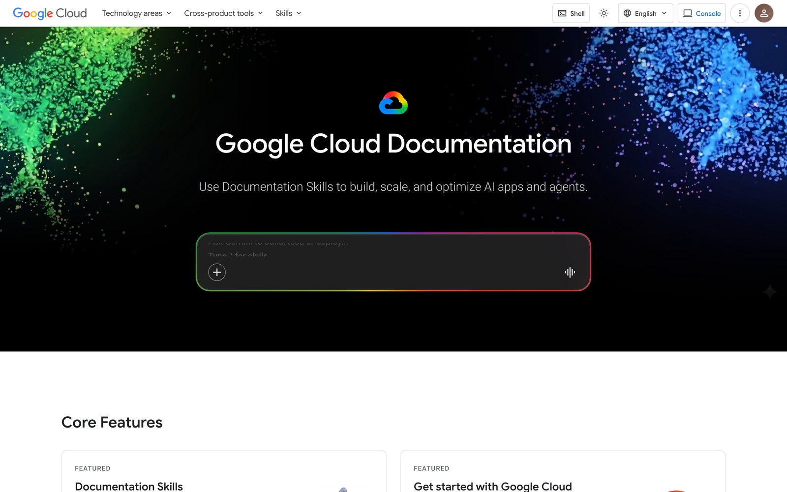
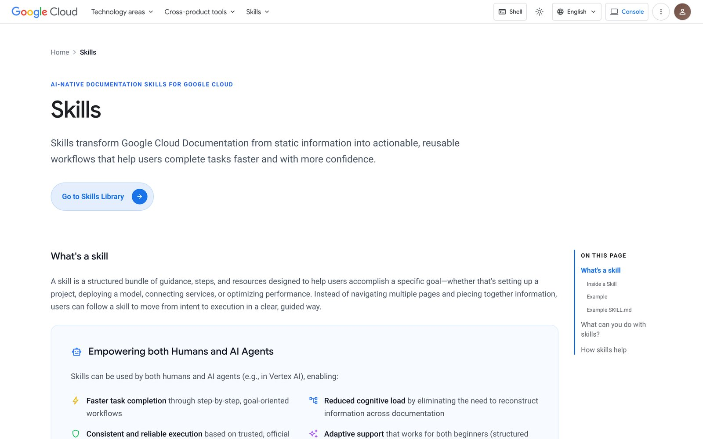
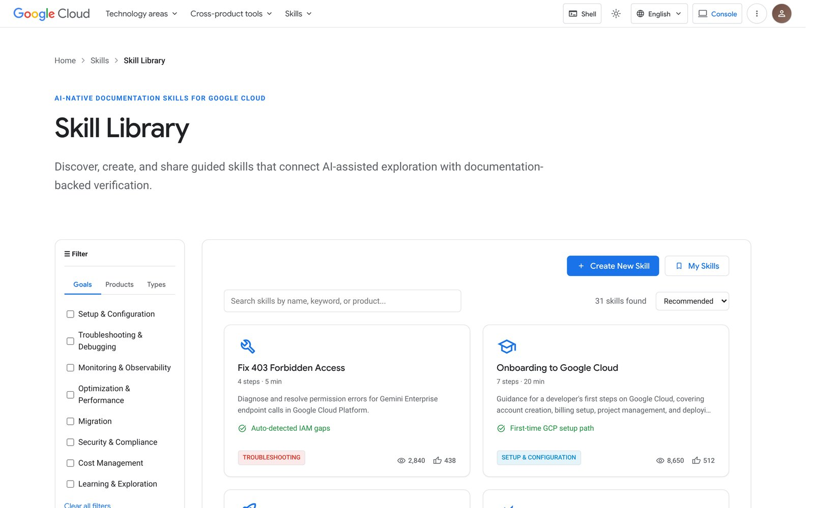
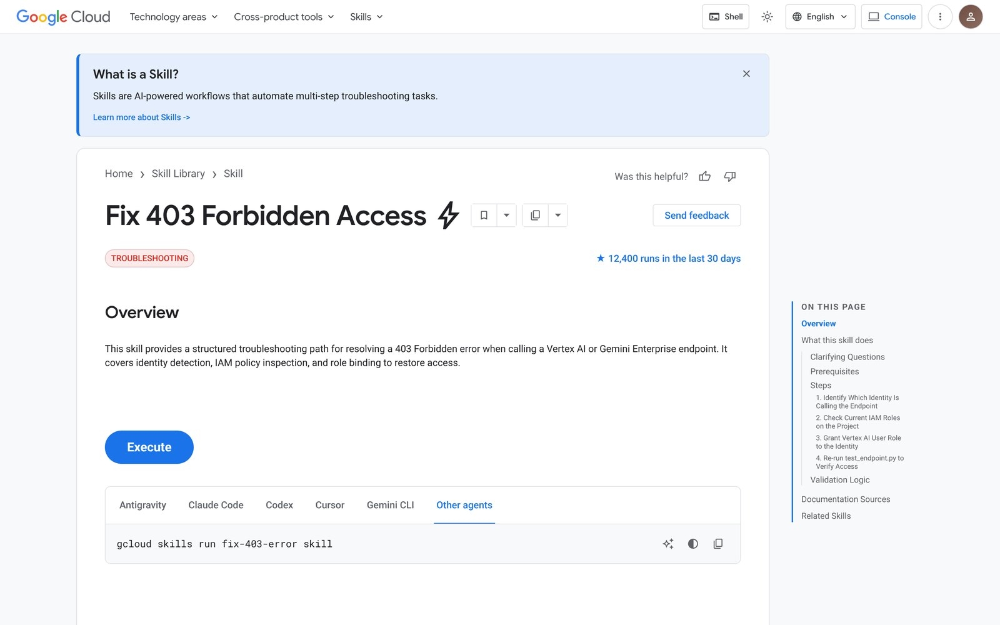
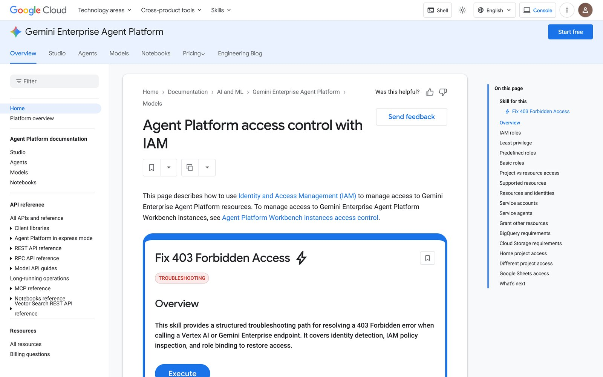

Developers now ask AI first and open the docs only to check the answer. With the Google Cloud Documentation team, we asked how documentation should change when AI, not the human, is the first reader — and answered with Skills: task-oriented workflows, grounded in official docs, that people and AI agents can both follow.

Google Cloud documentation supports more than 100 cloud services and is organized by product. It is an authoritative reference — but people reach for it differently now. They move between AI tools, search, community answers and the official docs, and the docs often come last.
The project started as docs.cloud.google.com launched as a dedicated home for technical documentation. Our guiding question: how should the documentation experience evolve when AI is increasingly the first reader?
Nine participants — builders, engineers and future developers — completed four realistic Google Cloud tasks: building an app, fixing a permission error, troubleshooting BigQuery and exploring models in Vertex AI. Finishing the task was not the point; we studied how, when and why they switched between AI, documentation and search.
We clustered what we saw into eleven themes. Three mattered most:
“AI first, then human experience, and then last thing, documentation. Because documentation is very long.”
A Skill is a task-oriented, agent-readable workflow grounded in official Google Cloud documentation. It is written as a SKILL.md file an AI agent can follow, while the Skill page gives people the same steps in a form they can read, check and run.
We ran a design-sprint week to get from problem to a testable prototype: map the problem, sketch competing solutions, decide on Skills, build a high-fidelity prototype, and test it with people.
An introduction page explains what a Skill is, what is inside one and how it helps both humans and AI agents.

Thirty Skills, filterable by seven user goals, fifteen product categories and four Skill types. Each card shows steps, time and the outcome at a glance.

Each Skill answers the questions a user asks in order: what problem is this, what do I need, what will the steps do, and what should I check before I execute. A copyable command runs it in the agent of their choice.

The right Skill appears inside the documentation page the user is already reading, connecting the explanation directly to a workflow they can run.

“If I trust Google, and this is on the Google Doc, then I don’t really care what it’s running.”
Each pattern became a recommendation for the next iteration. The highest priorities: a “What is a Skill?” explainer, an Execute button that states its outcome, a preview of the execution mode, trust signals such as source attribution, and a Skills flow embedded in the console.
Skills touch real cloud resources, so we used a Responsible AI impact assessment to set the guardrails: no meaningful action without the user’s review and approval, a clear preview of what a Skill will do, links back to the documentation behind every step, and extra checks for production and security-sensitive work.